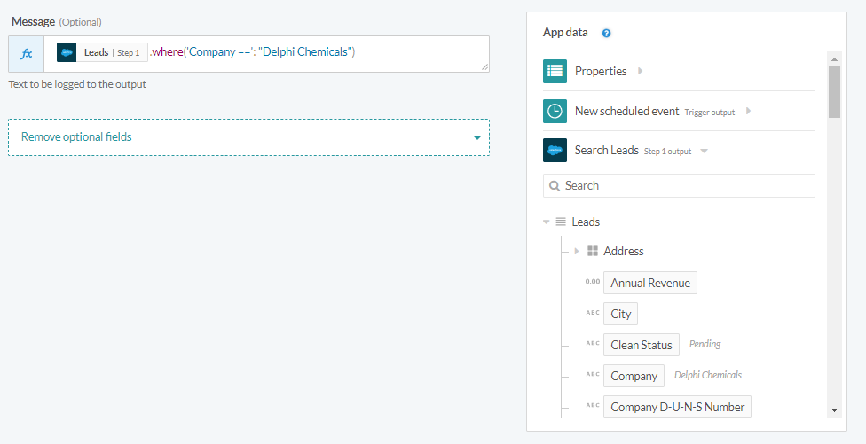
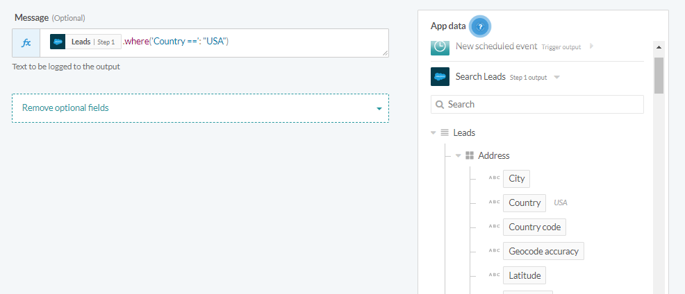

Lists and hashes
When you work with formulas and repeating structures, there are 2 key data structures you need to understand: arrays (lists) and hashes. Take note that most formulas will return an error and stop the job if it tries to operate on nulls (expressed as nil in Ruby), except for present?, presence and blank?.
You can refer to the complete Ruby documentation for arrays (lists) here as well as the Ruby documentation for hashes here.
Lists (arrays)
Arrays are ordered, integer-indexed collections of any object. List indexing starts at 0. Lists are the same as Ruby arrays, and we will be using lists and arrays interchangeably in this article.
Let's take the example of a list with 4 list items: 100, 101, 102, 103. This list is expressed as:
number_list = [100, 101, 102, 103, 104]
As lists are ordered, we can use the following formula to get the values. Workato only supports retrieving up to the fifth item in the list:
| Example | Result |
|---|---|
number_list.first |
100 |
number_list.second |
101 |
number_list.third |
102 |
number_list.fourth |
103 |
number_list.fifth |
104 |
number_list.last |
104 |
We can also use indexes to get corresponding values. Remember, indexes start at 0:
| Example | Result |
|---|---|
number_list[0] |
100 |
number_list[1] |
101 |
number_list[2] |
102 |
number_list[3] |
103 |
Lists in Ruby supports negative indexes.
| Example | Result |
|---|---|
number_list[-1] |
104 |
number_list[-2] |
103 |
number_list[-3] |
102 |
number_list[-4] |
101 |
Lists also support ranges as indexes. This returns another list, instead of returning only a value.
| Example | Result |
|---|---|
number_list[0..2] |
[100, 101, 102] |
number_list[-3..-1] |
[102, 103, 104] |
number_list[0..-2] |
[100, 101, 102] |
Hashes
A hash is a dictionary-like collection of unique keys and their values. They are similar to Lists, but where a List uses integers as its index, a Hash allows you to use any object type. Hashes enumerate their values in the order that the corresponding keys were inserted.
Let's take the example of a hash with 2 values, with item_name as "Acme widgets" and item_quantity as 10.
line_item = { item_name: “Acme widgets”, item_qty: 10 }
| Example | Result |
|---|---|
line_item[“item_name”] |
"Acme widgets” |
line_item[“item_qty”] |
10 |
List of hashes
In Workato, you will mostly run into lists of hashes. Let’s look at a Quickbooks invoice which has a number of line items. It will be represented as an list of hashes.
line_items = [ # list
{ item_name: “Acme widgets”, item_qty: 10 }, # hash 1
{ item_name: “RR bearings”, item_qty: 100 }, # hash 2
{ item_name: “Coyote tyres”, item_qty: 7 } # hash 3
]
Formulas
Workato supports a variety of list formulas. Formulas in Workato are whitelisted Ruby methods, and therefore not all Ruby methods are supported. You can always reach out to us to add additional formulas to the whitelist. Syntax and functionality for these formulas are generally unchanged.
Example list of hashes
The following is an example of a list of hashes called Contacts.
This is the Contacts list in a table form:
| name | state | company | company_rev | |
|---|---|---|---|---|
| Joe | joe@abc.om | CA | ABC | 1000 |
| Jill | jill@nbc.com | MA | NBC | 1000 |
| Joan | joan@nbc.com | MA | NBC | 1000 |
| Jack | jack@hbo.com | CA | HBO | 30000 |
This is the Contacts list in a list of hashes form.
[
{ name: 'Joe', email: ’joe@abc.com’, state: ’CA’, company: ’ABC’, company_rev: ’1000’ },
{ name: 'Jill', email: ’jill@nbc.com’, state: ’MA’, company: ’NBC’, company_rev: ’1000’ },
{ name: 'Joan', email: ’joan@nbc.com’, state: ’MA’, company: ’NBC’, company_rev: ’1000’ },
{ name: 'Jack', email: ’jack@hbo.com’, state: ’CA’, company: ’HBO’, company_rev: ’30000’ }
]
first
Returns the first item in a list. Can also be used to return the first n items in a list, as a list.
Example
| Example | Result |
|---|---|
["Jean", "Marie"].first |
"Jean" |
["Ms", "Jean", "Marie"].first |
"Ms" |
["Ms", "Jean", "Marie"].first(2) |
["Ms", "Jean"] |
last
Returns the last item in a list. Can also be used to return the last n items in a list, as a list.
Example
| Example | Result |
|---|---|
["Jean", "Marie"].last |
"Marie" |
["Ms", "Jean", "Marie"].last |
"Marie" |
["Ms", "Jean", "Marie"].last(2) |
["Jean", "Marie"] |
where
Retrieves only the rows (hashes) which meet the WHERE condition specified.
Example of simple where formula
contacts.where("state ==": "CA") returns the following rows:
| name | state | company | company_rev | |
|---|---|---|---|---|
| Joe | joe@abc.om | CA | ABC | 1000 |
| Jack | jack@hbo.com | CA | HBO | 30000 |
These rows will be expressed as a list of hashes:
[
{ name: ’Joe’, email: ’joe@abc.com’, state: ’CA’, company: ’ABC’, company_rev: ’1000’ },
{ name: ’Jack’, email: ’jack@hbo.com’, state: ’CA’, company: ’HBO’, company_rev: ’1000’ }
]
The following is a simple WHERE formula retrieving lead records with the company Delphi Chemicals.  Simple where formula retrieving lead records from company Delphi Chemicals
Example of where formula for nested fields
The WHERE formula can be nested to filter for records by nested values in the datatree.
 Nested where formula retrieving records with an address in USA
This is in contrast to a simple WHERE formula, where the filtering happens for non-nested values in the datatree:
Simple where formula retrieving lead records from company Delphi Chemicals
Example of compound where formula
A compound WHERE formula will retrieve only the rows that matches all the conditions.
contacts.where("state ==": "CA", "company_revenue >=": 10000) returns the following rows:
| name | state | company | company_rev | |
|---|---|---|---|---|
| Jack | jack@hbo.com | CA | HBO | 30000 |
These rows will be expressed as a list of hashes:
[
{ name: ’Jack’, email: ’jack@hbo.com’, state: ’CA’, company: ’HBO’, company_rev: ’1000’ }
]
Example of complex reduction
If a series of WHERE conditions are chained, the formula evaluates each where condition in series.
contacts.where("state ==": "CA").where("company_revenue >=": 10000) returns the following rows, which is the same as the compound where formula:
| name | state | company | company_rev | |
|---|---|---|---|---|
| Jack | jack@hbo.com | CA | HBO | 30000 |
In this case, however, the chaining will result in an intermediary array:
contacts.where("state ==": "CA") first returns:
| name | state | company | company_rev | |
|---|---|---|---|---|
| Joe | joe@abc.om | CA | ABC | 1000 |
| Jack | jack@hbo.com | CA | HBO | 30000 |
And .where("company_revenue >=": 10000) filters this intermediary array further to return only:
| name | state | company | company_rev | |
|---|---|---|---|---|
| Jack | jack@hbo.com | CA | HBO | 30000 |
Results will be expressed as a list of hashes:
[
{ name: ’Jack’, email: ’jack@hbo.com’, state: ’CA’, company: ’HBO’, company_rev: ’1000’ }
]
pluck
Retrieves only the columns which have been specified.
Example
contacts.pluck(“email”) returns
| joe@abc.com |
| jill@nbc.com |
| joan@nbc.com |
| jack@hbo.com |
If a single column, results will be returned as an array:
[joe@abc.com, jill@nbc.com, joan@nbc.com, jack@hbo.com]
contacts.where(“state ==”: “CA”).pluck(“email”, “company”) returns
| company | |
|---|---|
| joe@abc.com | ABC |
| jill@nbc.com | NBC |
| joan@nbc.com | NBC |
| jack@hbo.com | HBO |
Results are returned as a list of a list:
[["joe@abc.com", "ABC"], ["jill@nbc.com, "NBC"], ["joan@nbc.com, "NBC"], ["jack@hbo.com, "HBO"]]
format_map
Create an array of strings by formatting each row of given array of hashes. Allows you to add static text to the created strings as well. Fields to be represented in the formaat %{\
Example
contacts.format_map('Name: %{name}, Email: %{email}, Company: %{company}') returns
[
'Name: Joe, Email: joe@abc.com, Company: ABC' ,
'Name: Jill, Email: jill@nbc.com, Company: NBC' ,
'Name: Joan, Email: joan@nbc.com, Company: NBC' ,
'Name: Jack, Email: jack@hbo.com, Company: HBO' ,
]
The above example will give you a list of strings, one string for each row of the list "contacts", using data from 3 of the fields: name, email and company, as stated.
join
Works on a list to concatenate values together as a string. The values are joined together via the parameter defined.
Example
| Example | Result |
|---|---|
| ["Joe", "Jill", "Joan", "Jack"].join(",") | "Joe,Jill,Joan,Jack" |
| ["Joe", "Jill", "Joan", "Jack"].join(", ") | "Joe, Jill, Joan, Jack" |
| ["Joe", "Jill", "Joan", "Jack"].join("-") | "Joe-Jill-Joan-Jack" |
| ["Joe", "Jill", "Joan", "Jack"].join(" ") | "Joe Jill Joan Jack" |
We can also chain .join behind any formula that returns a list, such as
contacts.where(“state ==”: “CA”).pluck(“email”).join(“, ”). This returns
“joe@abc.com, jack@hbo.com”
smart_join
Joins array elements into a string. Removes empty and nil values and trims any white space before joining.
Example
| Example | Result |
|---|---|
[nil, "", "Hello", " ", "World"].smart_join(" ") |
"Hello World" |
["111 Vinewood Drive", "", "San Francisco", "CA", "95050"].smart_join(",") |
"111 Vinewood Drive, San Francisco, CA, 95050" |
reverse
Reverses the order of a list.
Example
| Example | Result |
|---|---|
["Joe", "Jill", "Joan", "Jack"].reverse |
["Jack", "Joan", "Jill", "Joe"] |
[100, 101, 102, 103].reverse |
[103, 102, 101, 100] |
sum
For integers and decimals, the numbers will be added together and the total sum obtained. For strings, the strings will be concatenated together to form a longer string.
Example
| Example | Result |
|---|---|
[1, 2, 3].sum |
6 |
[1.5, 2.5, 3].sum |
7.0 |
["abc", "xyz"].sum |
"abcxyz" |
uniq
Returns a list containing unique items i.e. remove duplicate items.
Example
| Example | Result |
|---|---|
["joe", "jack", "jill", "joe", "jack"].uniq |
["joe","jack", "jill"] |
[1, 2, 3, 1, 1, 3].uniq |
[1, 2, 3] |
[1.0, 1.5, 1.0].uniq |
[1.0, 1.5] |
flatten
Flattens a multi-dimensional array (i.e. array of arrays) to a single dimension array.
Example
| Example | Result |
|---|---|
[[1, 2, 3], [4, 5, 6]].flatten |
[1, 2, 3, 4, 5, 6] |
[[1, [2, 3], 3], [4, 5, 6]].flatten |
[1, 2, 3, 3, 4, 5, 6] |
[[1, [2, 3], 9], [9, 8, 7]].flatten |
[1, 2, 3, 9, 9, 8, 7] |
length
Returns the number of elements in self. May be zero.
Example
| Example | Result |
|---|---|
[ 1, 2, 3, 4, 5 ].length |
5 |
[{..}, {..}, {..}].length |
3 |
[" ", nil, "", nil].length |
4 |
[].length |
0 |
max
Returns largest value in an array. When comparing numbers, the largest number is returned. When comparing strings, the string with the largest ASCII value is returned.
Example
| Example | Result |
|---|---|
[-5, 0, 1, 2, 3, 4, 5].max |
5 |
[-1.5, 1.5, 2, 3, 3.5].max |
3.5 |
["cat", "dog", "rat"].max |
"rat" |
min
Returns smallest value in an array. When comparing numbers, the smallest number is returned. When comparing strings, the string with the smallest ASCII value is returned.
Example
| Example | Result |
|---|---|
[-5, 0, 1, 2, 3, 4, 5].min |
-5 |
[-1.5, 1.5, 2, 3, 3.5].min |
-1.5 |
["cat", "dog", "rat"].min |
"cat" |
Conditionals
include?
Returns true if the given object is present, otherwise returns false.
Example
| Example | Result |
|---|---|
["a", "b", "c"].include?("b") |
true |
["a", "b", "c"].include?("z") |
false |
present?
This function will check the input, returning true if there is a value present. If input is null, an empty string. or an empty array, formula returns false.
Example
| Example | Result |
|---|---|
["", nil].present? |
true |
" ".present? |
false |
[].present? |
false |
["cat", "dog", "rat"].present? |
true |
[1, 2, 3.0].present? |
true |
presence
This function will check the input, returning its value if there is one present, else returning nil.
Example
| Example | Result |
|---|---|
["", nil].presence |
["", nil] |
" ".presence |
nil |
[].presence |
nil |
["cat", "dog", "rat"].presence |
["cat", "dog", "rat"] |
[1, 2, 3.0].presence |
[1, 2, 3.0] |
Conversion
The following formulas allows you to convert data from arrays to other data types
to_csv
Generates CSV line from an array. This handles escaping. Nil values and empty strings will also be expressed within the csv line.
Example
| Example | Result |
|---|---|
["John Smith", "No-Email", " ", nil, "555-1212"].to_csv |
"John Smith,No-Email, ,,555-1212 " |
["John Smith", "No-Email", " ", nil, 1212].to_csv |
"John Smith,No-Email, ,,1212" |
to_json
Converts hash or array to JSON string
| Example | Result |
|---|---|
Hash: {"pet" => "cat", "color" => "gray"}.to_json |
{"pet":"cat","color":"gray"} |
Array: ["1","2","3"].to_json |
["1", "2", "3"] |
to_param
Returns a string representation for use as a URL query string.
| Example | Result |
|---|---|
{name: 'Jake', age: '22'}.to_param |
"name=Jake&age=22" |